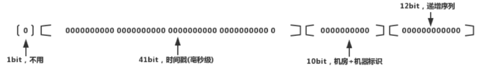
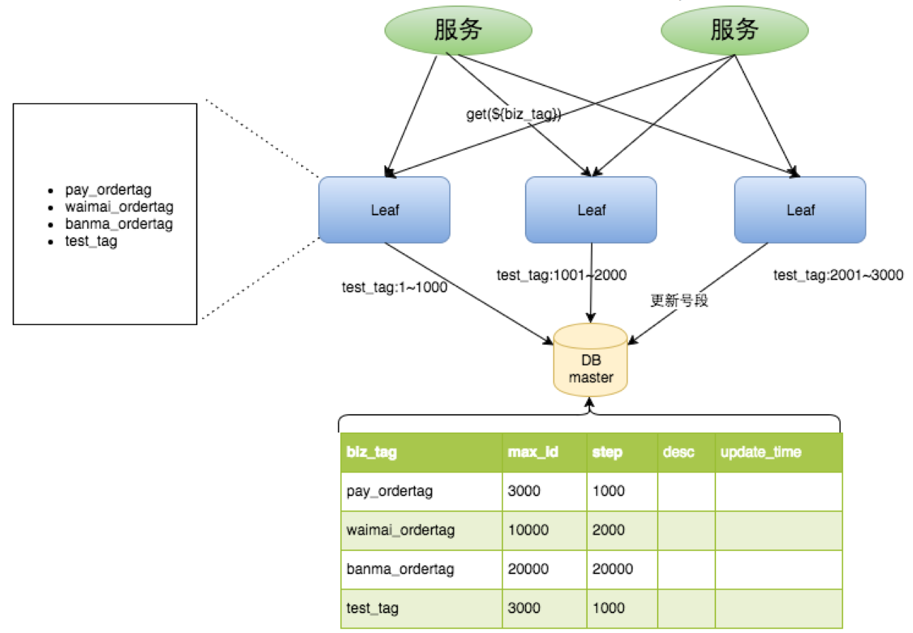
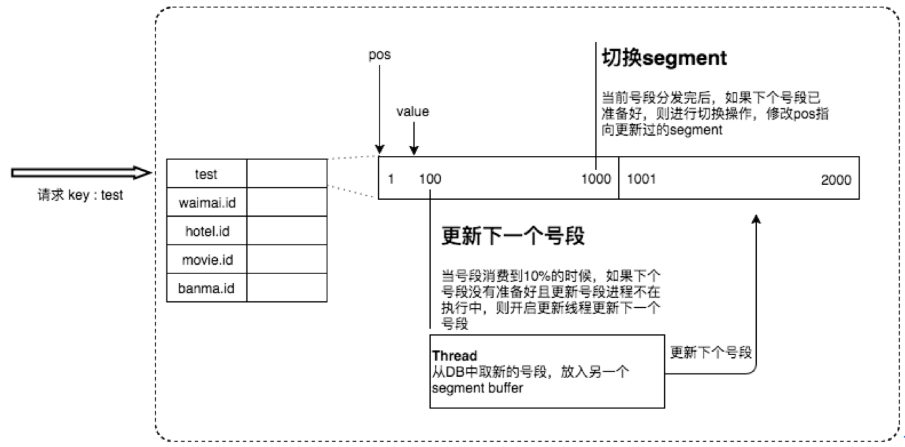
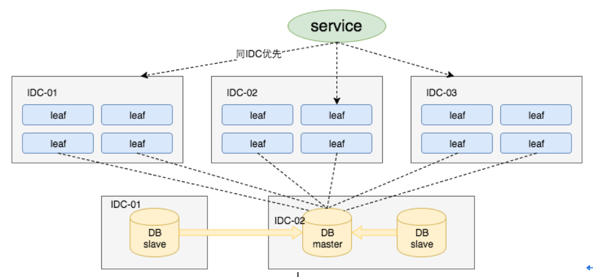
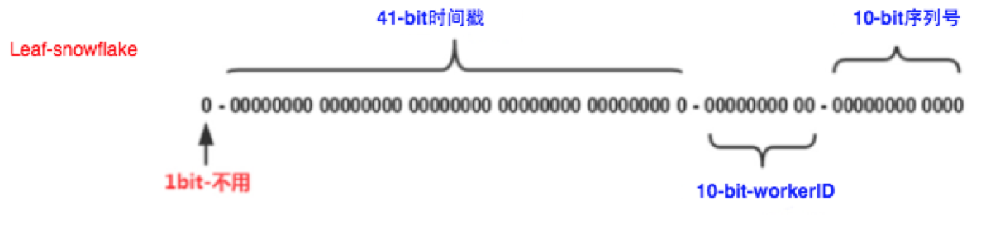
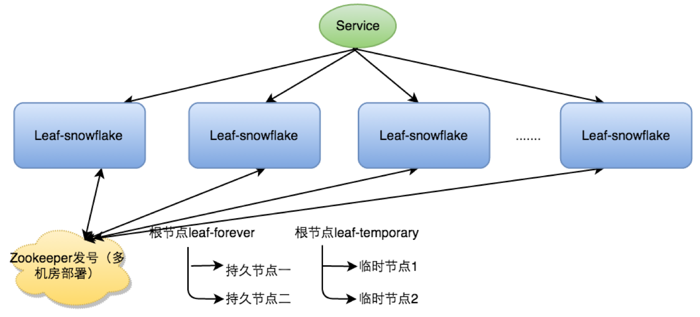
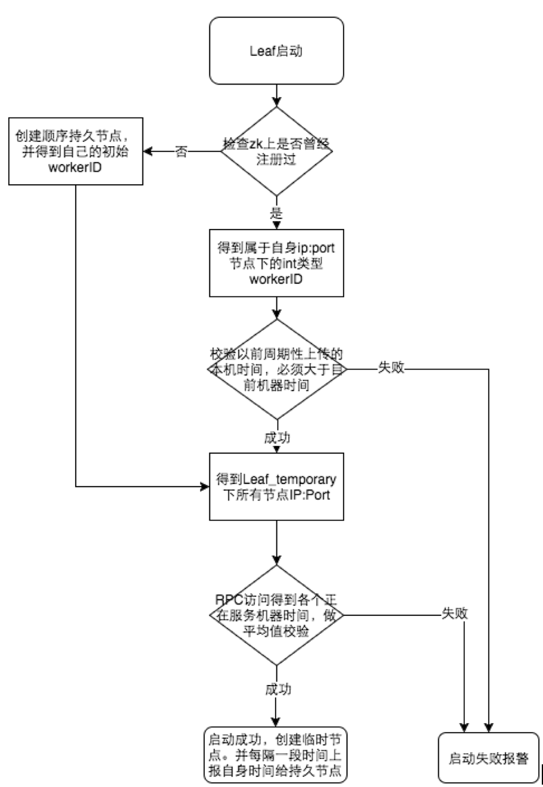

发号器
业务系统对ID的要求
1、全局唯一：不能出现重复的ID，这是最基本的要求
2、趋势递增：MySQL InnoDB引擎采用聚集索引，采用B+Tree的数据结构存储索引数据，趋势递增可以保证写入的性能
3、单调递增：保证下一个ID一定大于上一个ID，如事物版本号、排序等特殊要求
4、信息安全：如果ID是连续的，恶意用户的爬取工作就会非常容易，直接按照顺序下载指定URL，如果是订单号，竞争对手可以直接知道一天的订单量。所以一般需要ID无规则。
5、高性能、高可靠性：如果ID生成系统瘫痪，其它依赖ID生成的系统都将无法工作
a）平均延迟和TOP999延迟都要尽可能的低
b）可用性5个9
c）高QPS
数据库自增长序列
利用数据库自增序列实现全局ID，最常见的一种方式。
优点：实现简单，性能可以接受；数字ID天然有序，对分页或者需要排序的结果有帮助
缺点：
- 1、不同数据库的语法和实现不同，在数据库迁移或数据库多版本支持的时候需要特殊处理
- 如MySQL是auto_increment，可以在插入数据时自动补充主键ID，而Oracle需要通过Sequence生成，SEQ_XXXX.nextval
- 2、在单个数据库或读写分离或一主多从的情况下，只有一个主库可以生成，有单点故障的风险
- 3、在性能达不到要求的情况下，比较难扩展
- 4、分库分表的时候会有麻烦
- 5、在数据插入前无法获取到ID，数据插入后，获取的ID虽然是惟一的，但一定要等到事物提交后，ID才生效：有些双向引用的数据，不得不插入后再做一次更新；单向引用的，需要插入后再查询
优化方案：
针对主库单点，如果有多个Master库，或者针对分表，可以采用不同的起始值相同的步长（Master个数或分表的个数）。比如Master1生成1 4 7，Master2生成2 5 8，Master3生成3 6 9。
LAST_INSERT_ID
针对MySQL auto_increment，在插入后如果其它地方要用这个主键，可以采用SELECT LAST_INSERT_ID();获取上次插入的值。
值得注意的是：
- ① 如果一次插入了多条记录，这个函数返回的是第一个记录的ID值
- ② LAST_INSERT_ID是基于Connection的，只要每个线程都使用独立的Connection对象，LAST_INSERT_ID函数将返回该Connection对AUTO_INCREMENT列最新的insert or update作生成的第一个record的ID
- ③ 这个值不会被其它客户端（Connection）影响，保证了你能够找回自己的ID而不用担心其它客户端的活动，而且不需要加锁
- ④ 使用单INSERT语句插入多条记录, LAST_INSERT_ID返回一个列表
- ⑤ LAST_INSERT_ID是与table无关的，如果向表a插入数据后，再向表b插入数据，LAST_INSERT_ID会改变
Ticket Server方案
一个Ticket服务器是一个只包含一个数据库独立的数据库服务器。然后这个数据库里包含了一些类似Ticket32和Ticket64的表（分别用于提供32位整型主键和64位长整型主键）。
Tickets64的Sckeme大概像这样：
CREATE TABLE `Tickets64` (
`id` bigint(20) unsigned NOT NULL auto_increment,
`stub` char(1) NOT NULL default '',
PRIMARY KEY (`id`),
UNIQUE KEY `stub` (`stub`)
) ENGINE=MyISAM
SELECT * from Tickets64返回的一行数据大概像这样：
| id | stub |
|---|---|
| 111111 | a |
当我们需要一个新的64位的主键的时候，我们可以通过执行下面的SQL得到：
REPLACE INTO Tickets64 (stub) VALUES ('a');
SELECT LAST_INSERT_ID();
存储引擎为什么采用MyISAM？
存在单点问题
实现高可用的方法是跑两个Ticket服务。将ID生成的职责均分到两个服务上，一个生成奇数，一个生成偶数。设置如下：
# TicketServer1:
auto-increment-increment = 2
auto-increment-offset = 1
# TicketServer2:
auto-increment-increment = 2
auto-increment-offset = 2
然后我们使用轮询的方式去轮流访问这两个服务器，来达到负载均衡的目的和应对停机的情况。如果有一边不能保持同步了（停机了），那最多就是可能会有连续的几十万个奇数（或者偶数）的ID。但这不会有任何副作用。
通过多Master分步长的方式能够满足高可用及性能的要求，但仍然有以下缺点：
1、系统水平扩展困难。定义好步长和机器数之后，再添加机器就非常麻烦。比如一台机器扩展成两台，可以这样做：把第二台机器的起始值设置为比第一台超过很多的一个偶数，同时设置步长为2，然后摘下第一台，把ID保存一个奇数，同时也设置步长为2，再把机器挂上去。这样第一台生成奇数，第二台生成偶数。按照这种思路一台扩容到两台还好，如果是100台扩容到120台就是噩梦
2、数据库压力还是很大，每次获取ID都得读写一次数据库，只能靠堆机器来提高性能
3、ID趋势递增，非单调递增
UUID
主要组成部分：当前日期和时间、时钟序列、IEEE机器识别号
优点：实现简单、性能非常高（本地生成，没有网络消耗）
缺点：
- 1、没有顺序，不能保证趋势递增
- 2、太长，16字节128位，通常采用36长度的字段传标示，存储传输成本高。采用字符串存储，查询效率低，且不可读
- 3、信息不安全，基于MAC地址生成的UUID算法可能会造成MAC地址泄露。这个漏洞曾用于寻找梅丽莎病毒制作者的位置
- 4、不适合作为MySQL主键。官方建议主键越短越好；在InnoDB引擎下，无序的主键可能会引起数据位置频繁变动，严重影响性能。
类SnowFlake算法
是一种以划分命名空间来生成ID的一种算法，对64位二级制数据进行分段

- 1位标识符：始终是0标示正数
- 41位时间戳：存储的是时间差（当前时间-开始时间）的毫秒数，开始时间是我们ID生成器开始使用的时间。41位能够使用69年
- 10位机器编码：可以不是1024个节点
如果分机房（IDC），可以用5位标示机房，5位标示机器ID。
5位能表示32个不同的数据，而实际上应该不会有32个IDC，可以用2位区分IDC，8位表示机器，这样支持4个机房，每个机房支持256个机器
- 12位序列号：毫秒内的计算，同一个节点，一毫秒可以产生4096个ID序列
理论上SnowFlake方案的QPS为4096*1000=409.6W，这样的分配方式可以保证任何一个IDC的任何一台机器在任意毫秒内生成的ID不同。
优点：简单高效，生成速度快，整个ID是趋势递增的，灵活度高，整个划分可以按业务需求调整bit位的划分
缺点：强依赖机器的时钟，如果时钟回拨，会导致重复ID生成
具体实现时需要注意：
1、数据采用位移的方式
2、当一毫秒数据已使用完之后需要等到下一毫秒。实现上可以通过while+sleep或者不sleep只while比较时间。
Redis
依赖Redis的单线程特性，生产全局唯一ID。使用原子操作INCR和INCRBY来实现。比较适合使用Redis来生成每天从0开始的流水号，比如订单号=日期+当日自增长。每天在Redis中生成一个key，使用INCR进行累加。
ZooKeeper
通过znode数据版本来生成序列号。过程：
1、为每个sequence对象创建一个persistent节点
2、调用set设置数据，该节点的数据版本号会自动加1，并返回版本号
3、客户端使用版本号作为序列号
[zk: localhost:2181(CONNECTED) 8] create /sequence 1
Created /sequence
[zk: localhost:2181(CONNECTED) 11] set /sequence 1
cZxid = 0x4
ctime = Sun May 03 10:50:40 CST 2020
mZxid = 0x6
mtime = Sun May 03 10:51:18 CST 2020
pZxid = 0x4
cversion = 0
dataVersion = 2
aclVersion = 0
ephemeralOwner = 0x0
dataLength = 1
numChildren = 0
缺点：需要依赖zookeeper，性能不是很高，且版本号是32位的。
Leaf-美团点评分布式ID生成系统
Leaf-segment数据库方案
Leaf-segment方案，是在Ticket Server方案上的优化。做了如下改变：
① Ticket Server方案中每次获取ID都得读写一次数据库，造成数据库压力大。改为利用proxy server批量获取，每次获取一个segment（step决定大小）号段的值。用完之后再去数据库获取新的号段，可以大大的减轻数据库的压力
② 各个业务不同的发号需求用biz_tag字段来区分，每个biz_tag的ID获取相互隔离，互不影响。如果以后有性能需求需要对数据库扩容，不需要上述描述的复杂的扩容操作，只需要对biz_tag分库分表就行。（数据库压力很小，存储量也很小，应该无需扩容，先从扩容server和step考虑）
数据库表设计如下：
| 字段 | 类型 | 允许空 | 主键 | 默认值 | 描述 |
|---|---|---|---|---|---|
| biz_tag | varchar(128) | 否 | 是 | 区分业务，比如订单、商品 | |
| max_id | bigint(20) | 否 | 1 | 该biz_tag目前已被分配的ID号段的最大值，先跟新再获取且在同一事物中 | |
| step | int(11) | 否 | 步长 | ||
| desc | varchar(256) | 是 | |||
| update_time | timestamp | 否 |
原来获取ID每次都需要写数据库，现在只需要把step设置得足够大，比如1000。那么只有当1000个号被消耗完了之后才会去重新读写一次数据库。读写数据库的频率从1减小到了1/step，大致架构如下图所示：

比如：test_tag在第一台Leaf机器上是1~1000的号段，当这个号段用完时，会去加载另一个长度为step=1000的号段，假设另外两台号段都没有更新，这个时候第一台机器新加载的号段就应该是3001~4000。同时数据库对应的biz_tag这条数据的max_id会从3000被更新成4000，更新号段的SQL语句如下：
--通过being-commit保证更正和查询的原子性
Begin
UPDATE table SET max_id=max_id+step WHERE biz_tag=xxx;
SELECT tag, max_id, step FROM table WHERE biz_tag=xxx;
Commit
优点：
1、Leaf服务可以很方便的线性扩展，性能完全能够支撑大多数业务场景
2、ID号码是趋势递增的8byte的64位数字，满足上述数据库存储的主键要求
3、容灾性高：Leaf服务内部有号段缓存，即使DB宕机，短时间内Leaf仍能正常对外提供服务
4、可以自定义max_id的大小，非常方便业务从原有的ID方式上迁移过来
缺点：
1、ID号码不够随机，信息不安全（如果是内部系统或者对外部不可见的数据，这种ID没有关系，如果是订单的ID就需要采用SnowFlake算法）
2、TP999数据波动大，当号段使用完之后还是会hang在更新数据库的I/O上，tg999数据会出现偶尔的尖刺（TP=Top Percentile）
3、DB宕机会造成整个系统不可用
双buffer优化（预加载）
对于第二个缺点，Leaf-segment做了一些优化，简单的说就是：采用双buffer预加载，即当号段消费到某个点（10%）时就异步的把下一个号段加载到内存中。而不需要等到号段用尽的时候才去更新号段。这样做就可以很大程度上的降低系统的TP999指标。详细实现如下图所示：

采用双buffer的方式，Leaf服务内部有两个号段缓存区segment。当前号段已下发10%时，如果下一个号段未更新，则另启一个更新线程去更新下一个号段。当前号段全部下发完后，如果下个号段准备好了则切换到下个号段为当前segment接着下发，循环往复。
每个biz-tag都有消费速度监控，通常推荐segment长度设置为服务高峰期发号QPS的600倍（10分钟），这样即使DB宕机，Leaf仍能持续发号10-20分钟不受影响。
每次请求来临时都会判断下个号段的状态，从而更新此号段，所以偶尔的网络抖动不会影响下个号段的更新。
Segment中并不是把全部的ID序列缓存下来，而是记录最大值（long），当前值（AtomicLong）,获取时返回AtomicLong.getAndIncrement()。
Leaf高可用容灾
对于第三点"DB可用性"问题，目前采用一主两从的方式，同时分机房部署，Master和Slave之间采用半同步方式同步数据。当然这种方案在一些情况会退化成异步模式，甚至在非常极端情况下仍然会造成数据不一致的情况，但是出现的概率非常小。如果你的系统要保证100%的数据强一致，可以选择使用"类Paxos算法"实现的强一致MySQL方案，如MySQL 5.7GA的MySQL Group Replication。但是运维成本和精力都会相应的增加，根据实际情况选型即可。

同时Leaf服务分IDC部署，服务调用的时候，根据负载均衡算法会优先调用同机房的Leaf服务。在该IDC内Leaf服务不可用的时候才会选择其他机房的Leaf服务。
Leaf-segment方案可以生成趋势递增的ID，同时ID号是可计算的，不适用于订单ID生成场景，比如竞对在两天中午12点分别下单，通过订单id号相减就能大致计算出公司一天的订单量，这个是不能忍受的。这种情况可以采用Leaf-snowflake方案。
Leaf-snowflake方案

Leaf-snowflake方案完全沿用snowflake方案的bit位设计，即是"1+41+10+12"的方式组装ID号。对于workerID的分配，当服务集群数量较小的情况下，完全可以手动配置。当Leaf服务规模较大，手动配置成本太高。所以使用Zookeeper持久顺序节点的特性自动对snowflake节点配置wokerID。Leaf-snowflake是按照下面几个步骤启动的：
① 启动Leaf-snowflake服务，连接Zookeeper，在leaf_forever父节点下检查自己是否已经注册过（是否有该顺序子节点），可以通过判断值ip+port来判断是否为自己写的顺序节点
② 如果有注册过直接取回自己的workerID（zk顺序节点生成的int类型ID号），启动服务
③ 如果没有注册过，就在该父节点下面创建一个持久顺序节点，创建成功后取回顺序号当做自己的workerID号，启动服务

zookeeper中的两种节点
永久节点leaf_forever： 用来获取workId，写入的是ip+port，并
临时节点leaf_temporary：用来解决时钟回拨的问题
弱依赖ZooKeeper
除了每次启动会去ZK拿数据以外，也会在本机文件系统上缓存一个workerID文件。当ZooKeeper出现问题，恰好机器出现问题需要重启时，能保证服务能够正常启动。这样做到了对三方组件的弱依赖。一定程度上提高了SLA（SLA是Service-Level Agreement的缩写，意思是服务等级协议）。
解决时钟问题
因为这种方案依赖时间，如果机器的时钟发生了回拨，那么就会有可能生成重复的ID号，需要解决时钟回退的问题。

参见上图整个启动流程图
- 1、服务启动时首先检查自己是否写过ZooKeeper leaf_forever节点
- 若写过，则用自身系统时间与
leaf_forever/${self}节点记录时间做比较，若小于leaf_forever/${self}时间则认为机器时间发生了大步长回拨，服务启动失败并报警 - 若未写过，证明是新服务节点，直接创建持久节点
leaf_forever/${self}并写入自身系统时间，接下来综合对比其余Leaf节点的系统时间来判断自身系统时间是否准确
- 若写过，则用自身系统时间与
具体做法是取leaf_temporary下的所有临时节点(所有运行中的Leaf-snowflake节点)的服务IP：Port，然后通过RPC请求得到所有节点的系统时间，计算
sum(time)/nodeSize。若abs(系统时间-sum(time)/nodeSize) <阈值，认为当前系统时间准确，正常启动服务，同时写临时节点leaf_temporary/${self}维持租约。否则认为本机系统时间发生大步长偏移，启动失败并报警。
- 2、每隔一段时间(3s)上报自身系统时间写入
leaf_forever/${self}。
# 创建leaf_forever节点
[zk: localhost:2181(CONNECTED) 3] create /leaf_forever 1
Created /leaf_forever
# 当服务创建时检查自己是否写过leaf_forever顺序节点（节点中有标示具体的IP和端口，后面的序号作为workerID），如果每写过，就创建顺序节点，节点名称为IP+port，节点值为当点主机的时间
[zk: localhost:2181(CONNECTED) 4] create -s /leaf_forever/10.10.152.57:8080_ serverLongDatetime
Created /leaf_forever/10.10.152.57:8080_0000000000
[zk: localhost:2181(CONNECTED) 5] create -s /leaf_forever/10.10.152.57:8082_ serverLongDatetime
Created /leaf_forever/10.10.152.57:8082_0000000001
[zk: localhost:2181(CONNECTED) 6] create -s /leaf_forever/10.10.152.59:8082_ serverLongDatetime
Created /leaf_forever/10.10.152.59:8082_0000000002
# 每隔3秒向节点中写入当前主机的时间
[zk: localhost:2181(CONNECTED) 8] set /leaf_forever/10.10.152.57:8080_0000000000 serverLongDatetime
# 获取节点信息
[zk: localhost:2181(CONNECTED) 7] get /leaf_forever/10.10.152.57:8080_0000000000
serverLongDatetime
由于强依赖时钟，对时间的要求比较敏感，在机器工作时NTP同步也会造成秒级别的回退，建议可以直接关闭NTP同步。要么在时钟回拨的时候直接不提供服务直接返回ERROR_CODE，等时钟追上即可。或者做一层重试，然后上报报警系统，更或者是发现有时钟回拨之后自动摘除本身节点并报警，如下：
//发生了回拨，此刻时间小于上次发号时间
if (timestamp < lastTimestamp) {
long offset = lastTimestamp - timestamp;
if (offset <= 5) {
try {
//时间偏差大小小于5ms，则等待两倍时间
wait(offset << 1);//wait
timestamp = timeGen();
if (timestamp < lastTimestamp) {
//还是小于，抛异常并上报
throwClockBackwardsEx(timestamp);
}
} catch (InterruptedException e) {
throw e;
}
} else {
//throw
throwClockBackwardsEx(timestamp);
}
}
//分配ID